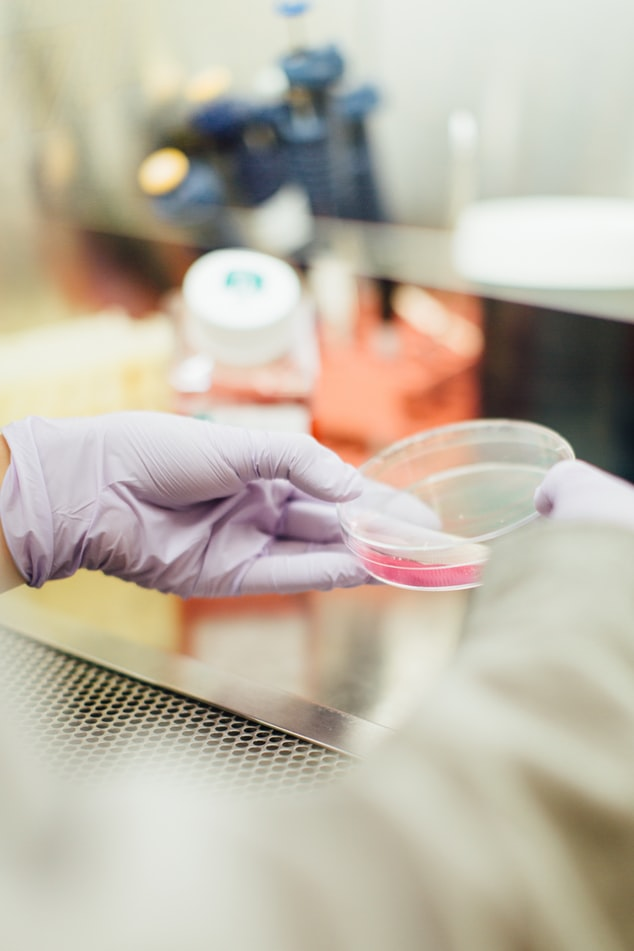
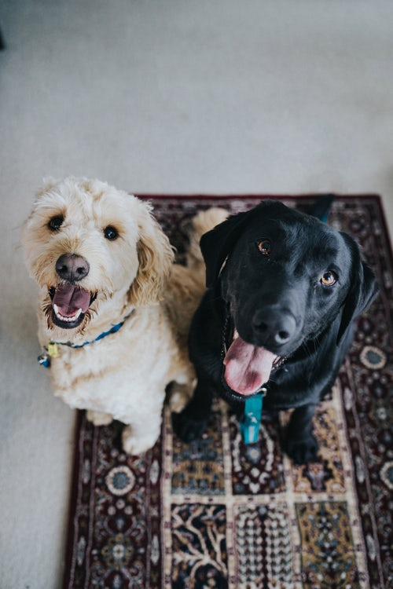

Our Services
-

Emergency care
Our hospital provides emergency care.
-

Medical services
We are equipped to handle and manage the most hospitalized cases.
-

Dental care
SoftClinic is equipped with an excellent veterinary dental machine and qualified dentist.
-

Surgery
We understand how important it is to create a comfortable environment for faster and better recovery of our patients.
-

Laboratory
In SoftClinic we can perform a large number of tests for diagnosis of infectious and noninfectious diseases.
-

Cardiology
The cardiovascular diseases in the pets are a common problem among the patients of every veterinarian.
-

Preventive care
Preventive care is one of the most important things you can do for your pet.
-

House calls
We understand that it is not always possible to bring your pet to the hospital.
-
Grooming
Depending on the type of your pet, we recommend grooming your pet every four to eight weeks.